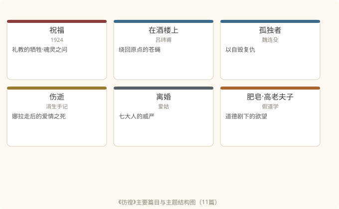

彷徨
一、基本信息
| 作者 | 鲁迅 |
|---|---|
| 成书/出版 | 1926年8月北京北新书局初版（Britannica：Wandering, 1926） Lu Xun — Encyclopaedia Britannica（百科全书） |
| 国别/地区 | 中国 |
| 时代 | 现当代 · 现代 |
| 体裁 | 短篇小说集 |
| 语言 | 汉语（白话） |

《彷徨》主要篇目与主题结构图（11篇）（主题·结构图）
二、创作背景
写作期（1924—1925，通说待核）：'新青年'团体散掉之后的彷徨期——五四退潮、兄弟失和（1923）、南下前的苦闷。自序题辞引《离骚》：'路漫漫其修远兮，吾将上下而求索'（原文，公有领域）。
Britannica：《彷徨》（Wandering, 1926）与《呐喊》（Call to Arms, 1923）并列为鲁迅小说双峰（Britannica Lu Xun 条：Nahan...Panghuang (Wandering, 1926)）。
与《呐喊》的对照：《呐喊》是'听将令'的呐喊，《彷徨》是'新文苑，旧战场'的独自求索（通说解读）——技巧更圆熟、情绪更沉郁。
三、内容脉络
农村与旧家庭：《祝福》——祥林嫂在'鲁四老爷'的礼教与'捐门槛'的救赎幻灭后死去，'我'的无能为力；《离婚》——爱姑的'闹'在七大人面前迅速瓦解；《肥皂》——四铭的'孝女'道德剧下的性欲；《高老夫子》——假新学者的丑态。
新知识者的失败者群：《在酒楼上》——吕纬甫'敷敷衍衍，模模胡胡'地教《女儿经》；《孤独者》——魏连殳'我已经躬行我先前所憎恶的一切'（原文意，待核）的自毁；《伤逝》——涓生与子君'娜拉出走之后'的爱情死亡实录——'人必生活着，爱才有所附丽'（原文，公有领域）。
《长明灯》《示众》《幸福的家庭》：看客、无聊与'疯子'的变体——启蒙者的孤立。
四、主要人物表
| 人物 | 身份 | 说明 |
|---|---|---|
| 祥林嫂 | 寡妇·佣工 | '人死了之后有没有魂灵'——礼教牺牲品的终极形象 |
| 吕纬甫 | 返乡旧友 | '像一只苍蝇飞了一圈又回到原点'（原文意，待核）——启蒙者的倦怠 |
| 魏连殳 | 新知识分子 | 以自毁'复仇'社会——以死证'孤独者'的绝路 |
| 涓生、子君 | 同居恋人 | '娜拉走后怎样'的小说化：无经济独立的爱情之死 |
| 爱姑 | 离婚妇女 | 在'七大人的威严'前不战自溃 |
| 四铭 | 道学先生 | '肥皂'洗不净的欲望 |
五、主题与艺术特点
- 启蒙的无效与幻灭：从'呐喊'到'彷徨'——新文化退潮期的精神状态（通说）。
- 女性命运的三重奏：祥林嫂（礼教）、爱姑（习俗）、子君（自由恋爱）——三种'出路'的失败（通说）。
- 知识者的自我解剖：《孤独者》的自毁与《伤逝》的手记——鲁迅把'启蒙者'自己送上解剖台（通说）。
- 艺术特点：白描的心理深描（'画眼睛'——其自述技法，通说待核）、反讽的双层叙述（《祝福》的'我'）、比《呐喊》更内敛的结构。
六、影响与评论
- Britannica（Lu Xun 条目）：Panghuang (Wandering, 1926) 与 Nahan 并列——'short-story collection'。
Lu Xun — Encyclopaedia Britannica（百科全书） - Britannica：'commonly considered the greatest in 20th-century Chinese literature'（常视为20世纪中国文学最伟大者）——其小说艺术的成熟集中于本集。
Lu Xun — Encyclopaedia Britannica（百科全书） - 《伤逝》与'娜拉'论：与鲁迅《娜拉走后怎样》（1923演讲，通说待核）互文——中国现代女性解放的思想史文本。
Lu Xun — Encyclopaedia Britannica（百科全书） - 学术地位：'彷徨技巧更胜呐喊'为学界主流评价之一（通说待核，具体文学史著作待核）。
Lu Xun — Encyclopaedia Britannica（百科全书）
七、阅读建议
难点
- 情绪低沉内敛，没有《呐喊》的锋利——需体会'求索'的自嘲。
- 知识者小说（《孤独者》《伤逝》）的对手戏（叙述者与魏连殳）需要细读。
- 民俗细节（祝福、捐门槛）需要注释。
- 《鲁迅全集》（人民文学出版社2005年版）：标准。
- 《彷徨》单行本（人民文学出版社'语文推荐'）：注释本。
- 英译：Yang Hsien-yi & Gladys YangSelected Works；Julia Lovell 译本（通说待核）。
先读《祝福》《伤逝》两大名篇 → 《在酒楼上》《孤独者》'双镜像' → 《离婚》《示众》补看客主题 → 对照《呐喊》重估两集。
八、待核实
- 初版（1926年8月北新书局）与篇目顺序细节待核。
- 各篇首发（《语丝》《小说月报》等）逐篇待核。
- 兄弟失和（1923）与本集的关系（学界讨论）待核。
- '画眼睛'技法自述出处待核。
本页主要来源
鲁迅的其他收录作品：呐喊